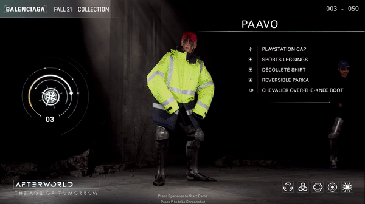
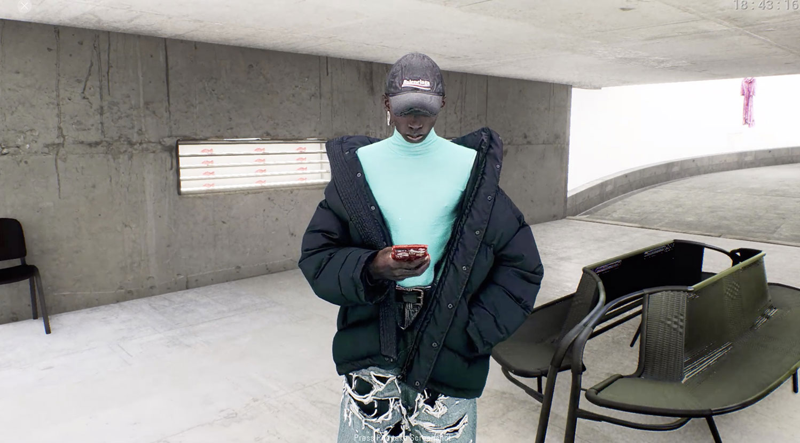
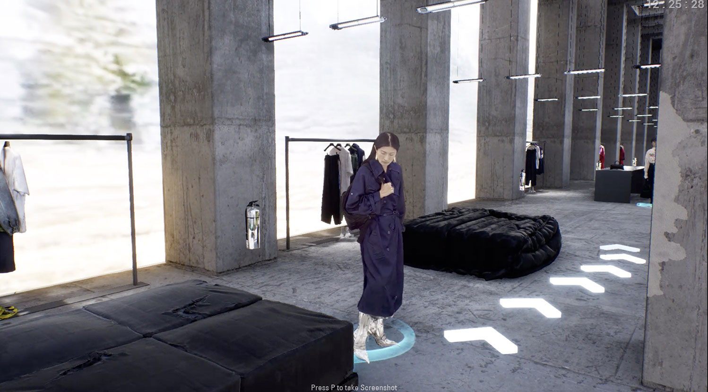
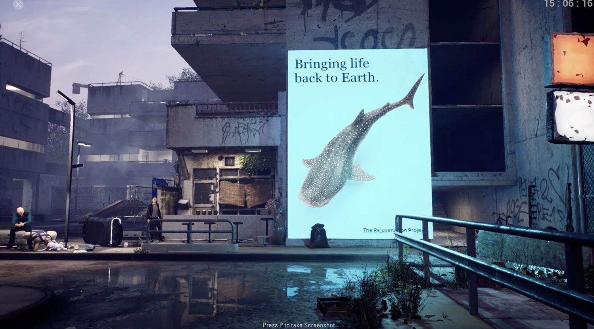
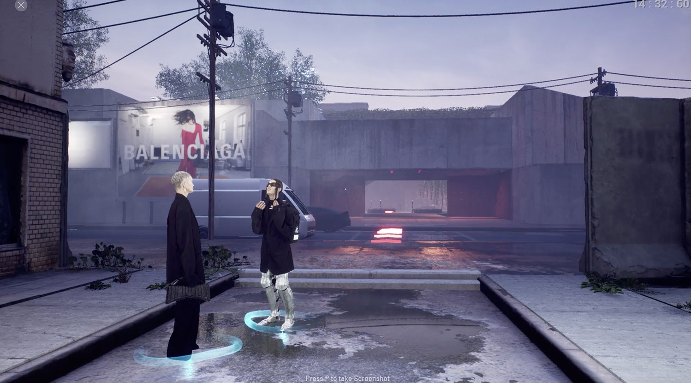
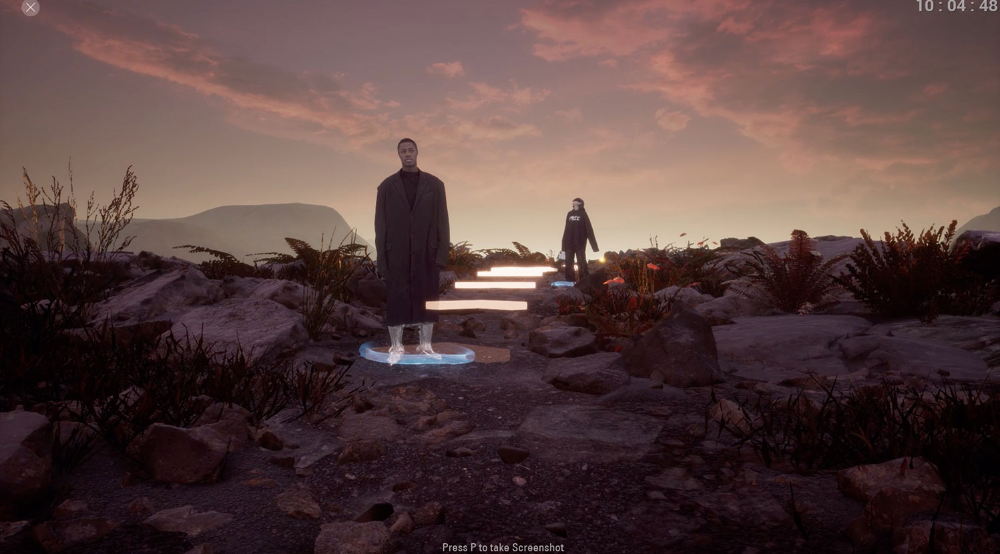

Blog posts
Balenciaga created a video game for their Spring/Summer 2021 presentation
Due to covid-19 being in full swing the big brands had to think long and hard about what exactly they should do for their Spring/Summer 2021 collections. Here are the highlights:
• Prada did a “livestream” of their fashion show which ended with a Q&A with Rick Owens and Miuccia Prada. Prada’s show didn’t look like a real livestream at all, more like a high production recording that took a whole day to film. We don’t mind though, no point having a “live” livestream really.
• Burberry cleverly partnered with Twitch for their livestream
• Jacquemus had a socially distanced show in a wheat field and livestreamed it
• Gucci hosted their own fashion week called “GucciFest” collaborating with Gus Van Sant on their 7 part video series. Our attention span didn’t make it past the first episode unfortunately.
• Chanel had their show in a castle and they only had one guest watching the show: Kristen Stewart. Weeeeeeiiiird. We hope she tested negative...
• Acne Studios did a classic livestream at the empty Grand Palais
• Balenciaga on the other hand went all in and created an online videogame dedicated to their new collection - it’s something we would only expect from Demna Gvasalia.
The game is called Afterworld: The Age of Tomorrow and it’s a simulation taking you through a digital world that Balenciaga created where the characters are wearing the brand’s spring/summer 2021 collection. The entire simulation [we call it a simulation and not a game since you are just walking a pathway instead of playing] takes place for around 15 minutes. It starts with an intro where you roll through the “characters” like in a 90s fighting game detailing the garments in each look [check out the animated GIF above].
You then transition into a Blade Runner-esque world based in a concrete building perhaps in a big metropolitan city, where the models are showcasing the new collection while standing around, browsing on their phones or taking selfies.

You then walk through 5 zones, all zones looking apocalyptic. See this “Bringing life back to earth” ad in their game below, indicating a scary future.


There is a small story in the game and it’s very very much fitting for Balenciaga’s brand and current creative direction. *SPOILER ALERT, highlight to read* We thought the story would end when we arrive to a rave in the forest, but we continued from there, bypassing models dancing high on life *SPOILER ALERT OVER*
If this was a contest, hands down we would give Balenciaga the golden medal 🥇 for their spring/summer 2021 presentation.
FINAL THOUGHTS
Phew, all these brands’ Marketing and Digital departments must have been sweating hard from all that digital thinking this year. A for effort guys! We will be watching you again in 6 months.
Date: 2020. december 6.